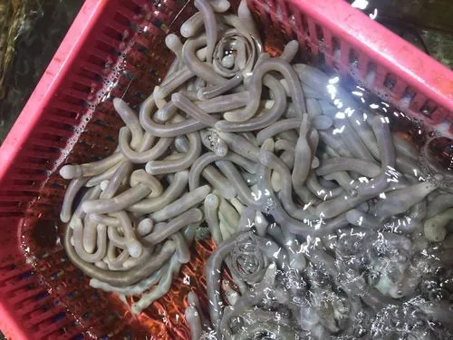

其他无脊椎动物 · 动物界
方格星虫 Sipunculus nudus

俗称沙虫的常见星虫动物，身体细长有方格状肌纹，生活在沙滩泥沙中，是中国南方沿海的珍贵海产。
- 分类
- 门星虫动物门纲星虫纲目星虫目科星虫科属星虫属
- 栖息环境
- 潮间带沙滩和泥沙底，挖洞穴居
- 地理分布
- 中国南方沿海，以及东南亚和印度洋沿岸
- 保护级别
- 暂无评估；野生资源受采挖影响
物种志
方格星虫体长约 10–20 cm，身体呈细长的圆筒状，体表光滑无节，纵肌和环肌交织形成方格状的纹理，因此得名；前端有可伸缩的吻，吻端有触手，体色灰白、淡红或肉色，身体柔软有弹性。
它生活在潮间带沙滩和泥沙底，挖掘洞穴，靠吻部翻动泥沙，取食有机碎屑、藻类和微小生物。方格星虫是中国南方沿海的珍贵海产，俗称沙虫，可鲜食或晒成沙虫干，味道鲜美，价格较高。由于采挖强度大和沙滩环境变化，部分地区资源下降，人工养殖和增殖技术正在发展。赶海挖沙虫需要翻动沙滩，应适度采挖并保护沙滩生态。沙虫干便于保存和运输，是南方沿海常见的年货和礼品。
形态与习性
- 食性取食有机碎屑、藻类和微小生物
- 体长约 10–20 cm
- 形态身体细长，肌纹形成方格状纹理
- 栖息潮间带沙滩和泥沙底，挖洞穴居
- 经济南方珍贵海产，可鲜食或晒成沙虫干
- 资源采挖强度大，需适度采捕和增殖保护
趣味知识
- 沙虫是方格星虫的俗称，体表的方格纹理是它得名的原因。
- 它生活在沙滩里，靠伸缩的吻部翻动泥沙找食物。
- 沙虫干是南方沿海的名贵干货，价格不低。